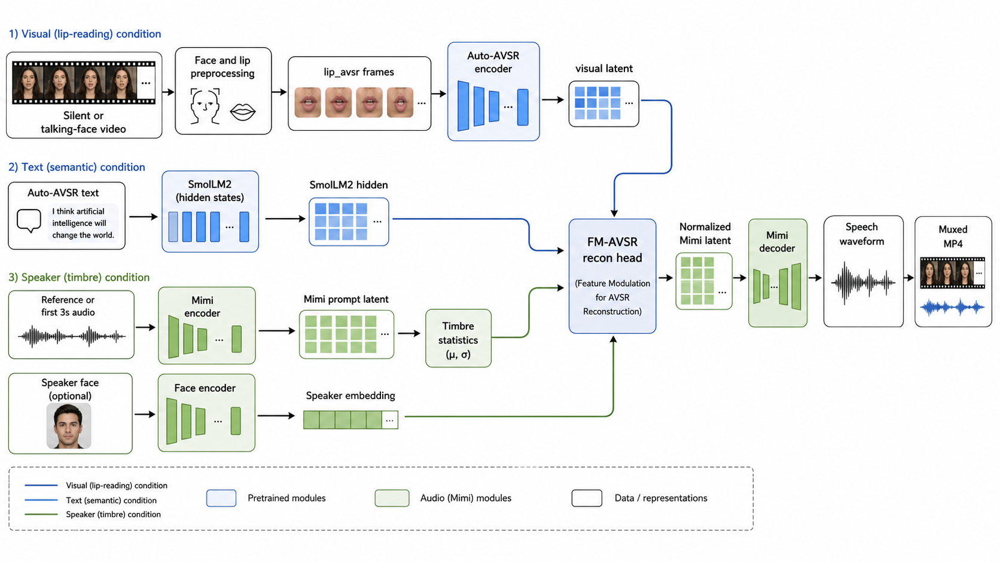
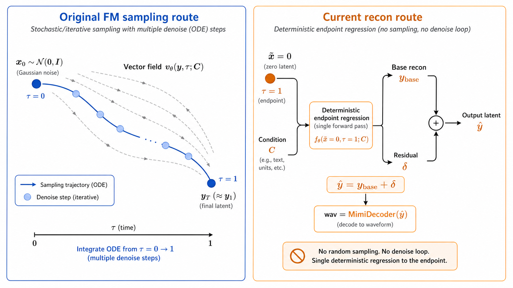
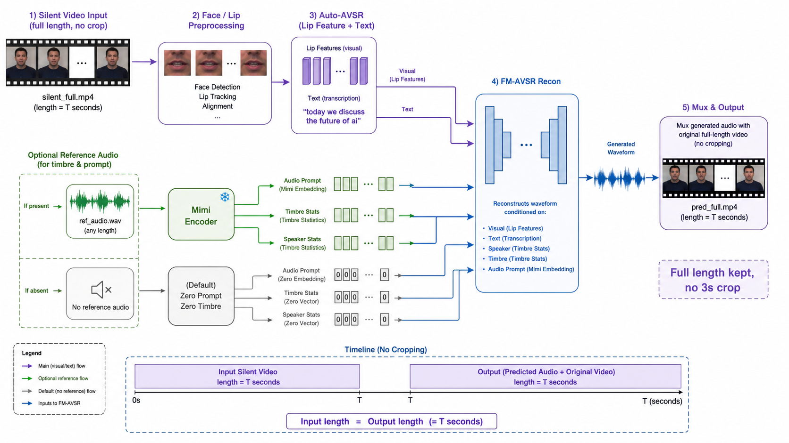

Why StreamLip
The system is not a pure vision-to-text-to-audio cascade. Text is useful as a semantic condition, but audio quality is driven primarily by lip timing, visual speech features, Mimi audio latents, and speaker/timbre conditions. This makes the reconstruction less dependent on perfect transcript accuracy.
Self-Trained V5 Branch
StreamLip V5 consumes visual speech features and decodes text through an LM-based decoder with visual cross-attention.
Deterministic Recon Head
The audio branch predicts Mimi latent residuals directly instead of relying on a slow sampling or flow-matching trajectory.
Timbre Conditioning
A short reference audio segment provides speaker and prompt statistics, improving perceived voice consistency.
System Architecture
Silent video is normalized, lip features are extracted, StreamLip V5 provides semantic text features, Mimi supplies the audio latent space, and the recon head generates speech conditioned on visual, text, and timbre signals.



Generated Examples
The Trump example is the primary checked-in silent/reference demo. Five additional short generated videos show the same reconstruction pipeline on non-Trump clips.
Trump Silent/Reference Demo
Silent input with a separate reference segment for timbre conditioning.
Generated Example A
Longer post-prompt generated output from the raw-video pipeline.
Generated Example B
Additional non-Trump reconstruction example.
Generated Example C
Short post-prompt generated output from the release pipeline.
Generated Example D
Additional generated face-video output with restored audio.
Generated Example E
HRX reprocessed example using the current visual preprocessing path.
Run the Pipeline
The release uses local checkpoints under ckpt/. Our trained
weights are distributed through a project checkpoint repository, while public
Mimi and SmolLM2 dependencies can be restored from Hugging Face mirror.
Default one-command silent/reference demo
After installing requirements and restoring checkpoints, this command reproduces the checked-in Trump-style reference workflow.